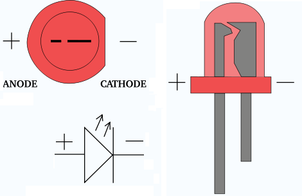

Materials 1. NES Controller. The one that I used didn't work anymore. You can purchase these from Ebay 2. 3 AAA rechargeable batteries 3. 5.5v solar panel - Ebay 4. Clear 5mm LED lights - Ebay 5. Mercury switch - Ebay 6. Rear bike light. I found this one on the ground! You can buy them though from Ebay for dirt cheap. The one that I have linked to is a 9 LED, the one I used had 7. 7. Computer wire. Pulled from an old PC 8. Casting Resin. purchased from my local hardware store 9. Mould. - Ebay 10. Diode Tools 1. Soldering Iron 2. Solder 3. Pliers 4. Hot Glue 6. Drill 7. Stanlley knife. 8. Dremmel


First thing you need to do is to pull apart the NES controller. Steps: NES Controller 1. Un-screw the NES Controller. 2. Remove the circuit board. You won’t need this. 3. Remove the buttons and rubber behind the buttons and store in a safe place 4. Inside the controller, there are some gussets and plastic pins which need to be removed to make room for all of the bits that you need to add. In the picture below, I have highlighted which ones to remove. Next is to pull apart the bike light. The one that I used was a rear bike light which I found on the ground! It was a little smashed-up but still worked ok. Bike Light 1. Remove the plastic cowl. 2. Remove the plastic battery holder so you are only left with the circuit board, LED’s and switch. 3. De-solder the switch and remove. 4. Cut off the LED’s 5. You should be left with just the circuit board as below.



Next step is adding the LED’s to the case. Steps: 1. Screw together the NES controller – you only need to add a couple of screws to hold it together. 2. Mark out where you want the LED’s to go. The hardest part about this is the hole which the cable went through – it kind of gets in the way. I had to put an LED half into the hole and half out to ensure an even spread. It worked ok in the end but just be mindful of it. 3. Drill 2 small holes for the LED leads to go through. You will need to do this for all 7 LED’s 4. Trim the LED leads a little and thread them through the holes. Do one at a time and make sure that the anode and cathode (negative and positive) are all the same way. This will ensure that you won’t mix-up the wires when they are attached to the ends. 5. Hot glue each LED into place and trim legs where necessary


This is the most difficult bit (or maybe just the most tedious!). Steps: 1. First glue down the 2 red buttons and the D pad. You don't need to use the rubber backings so these can be put aside. I used hot glue to do this. 2. Cut 9 pieces of computer wire (or any wire you may have) to 150mm lengths. 3. Tin the ends of each of the wires. 4. Solder onto the circuit board. Try and think about where the circuit board will go in the controller, this will help you to decide how each wire should be soldered to the board. Solder a wire to each of the LED ports (7), 1 to the battery terminals and one to the switch. 5. Next cut the wires where necessary. Again place the board in the spot where it will sit in the controller and think about where the best place to put the wire is. Keep in mind where the batteries need to go. 6. Solder the wire ends to the LED’s. To ensure you have the polarities right, attached a battery to the battery wire, if you have the polarity correct the LED will light up. You can touch the switch wires together to get the LED’s to work. 7. You will also need to wire the batteries up. You can solder the wires direct to the battery but be careful as heat and batteries don’t mix too well. I taped the batteries together as well. To make enough room you will need to remove some of the plastic that the "start / select" buttons are. I dremmeled (very carefully) away some of the plastic so they would fit, and it's a very tight fit! Note - I had to add an extra battery as the rechargeable ones are only 1.2 volts and 2 wasn't enough to power the LED's properly. This caused a few headaches as I has to remove a couple of LED's, then dremmel some of the case to make room for the extra bbatttery. See photos in step 6.


The solar panel is added to the back of the controller. Any time you want to charge it all you have to do is turn it so the panel is facing up and leave it in the sun! Steps: 1. Drill a hole in the back of the controller. The solder points on the solar panel will determine where you have to make a hole in the controller panel. 2. Make sure that you can see the solder points on the other side and hot glue on the solar panel. 3. Add a diode to the positive solder point on the solar panel. The diode will need to be attached with the positive end soldered to the positive solder point. See image below. This will ensure that the batteries don’t leak power when it’s dark. 4. Mark out what is positive and negative on the inside of the controller, this way you won’t forget!


Steps: 1. The next step is to add the mercury switch. Make sure that it is at the correct angle and hot glue into place. You want to make sure that the LED’s don’t turn on when it is being charged. 2. Add some hot glue to the switch so it doesn't out of place 3. Solder on the solar panel directly to the batteries. 4. Solder on the battery wires from the circuit board to the battery terminals. 5. Test. 6. Close-up the case, making sure all of the wires are tucked away and nothing is hanging out of the case. 6. Test. 7. Add some hot glue to the hole that the cable hole - this will make sure that no resin gets inside the case.


Casting Resin is a really easy material to use and the finished product looks great. I recently finished another Instructable on resin which can be found here. As I don’t really want to write the same thing twice, I’ll be referencing this Instructable where necessary. The first step is finding the right mould to use. The best type of material to use is the stuff that ice cream containers are made out of. As I wanted a certain type of shape I decided to go with a silicon mould. There are plenty of different silicon cake moulds available these days; it was just a matter of finding the right one for size and shape. I finally found this one on Ebay which was exactly what I needed. Steps: 1. The first step is deciding how much resin you will need to create the initial layer. I wanted to have 15mm of resin on either side of the controller so I worked out the volume needed was 250 ml . If you need an on-line calculator, then try this one. 2. Mix the resin as instructed and pour the initial layer. 3. After 24 hours the resin will be hard enough to place the controller on top. Before you do this though, make up some more resin (50mm) and pour on top of the hard resin. This will ensure that there are no air bubbles when you put the controller on top and also ensure that the controller will be stuck down when you add the rest of the resin. Note: In my first initial try at doing the above I just dumped the rest of the resin on top of the controller. This resulted in the controller moving and floating about in the resin! By the time I checked it (a couple of hours later) the resin had already started to go hard and the controller was sitting sideways with one corner sticking out. I had to remove the controller from the half dried resin (not fun) and try to get as much of it off as possible. This resulted in me being covered in resin and little bits of fluff stuck to the controller. Acetone helped a lot in removing most of this but it also removed some of the colour from the front of the controller. 4. Pour the rest of the resin (500ml) in and let to dry for 48 hours. 5. Carefully remove from the mould and let to further dry for 24 hours


Once the resin has hardened sufficiently enough it’s time to make it water clear. Steps: 1. First you will need to use some rougher sandpaper – I used 400 grit initially. When sanding, move the resin across the sandpaper and make sure that the sandpaper is on a flat, even surface and it can’t move around. I used some clamps to hold it still. 2. Next is to use some wet / dry sandpaper. How to use this can be found on my other Instructable here. 3. Once you have sanded the resin down to a smooth finish it’s time for the final polishing. The best thing to use is something like Brasso. Use a cloth and in a circular motion, rub the resin all over. Wipe clean and repeat until you have a water clear finish.


You should now hopefully have something like the below. The first part of this project (making the controller) was the easy bit. Emersing it in resin took a couple of tries before I got it right. Am I happy with the final product? Yes I am. I would have liked to have had more resin on the back but it really doesn't matter as no-one will really see this part of the controller anyhow. Learnings: 1. Working with large amounts of resin isn't fun. 2. Plastic floats. 3. Resin is hard to get off your hands 4. There's not much room in a NES controller.